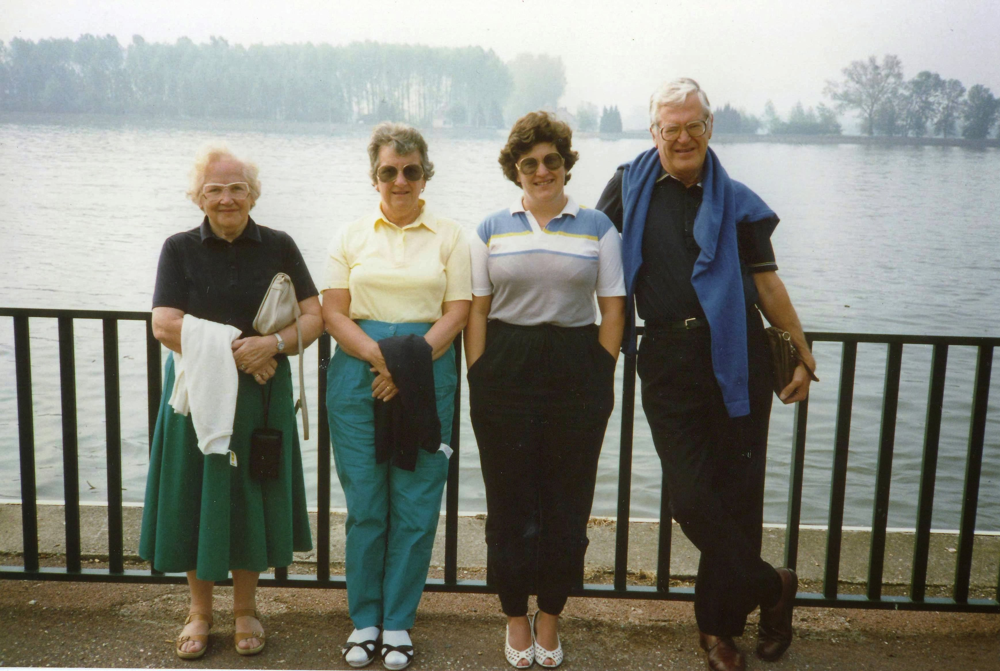
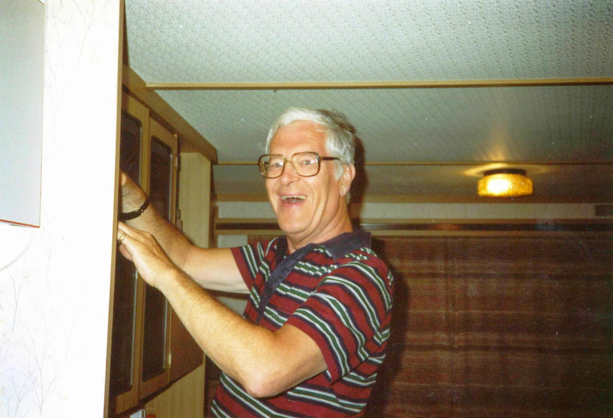
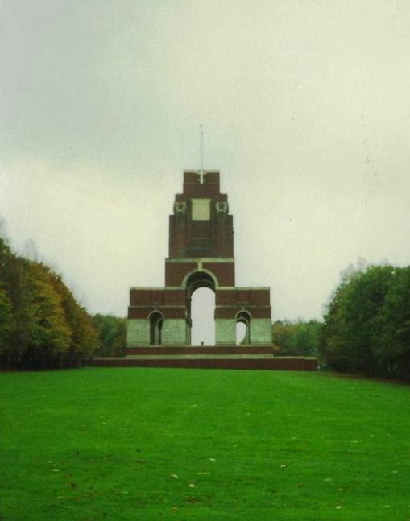

1988/1989
September 1988
Erica asked me to be her witness at the marriage service. I said yes provided I didn't have to wear anything bridesmaidy.Alistair had asked his little brother. It seems you don't need to be Catholic to witness a Catholic wedding. The hen lunch was a very respectable affair with both mother's present. The wedding day started with the bride helping pump up her brother's wheelchair tyres. Typical Erica. I made sure I captured every moment including some that the bride maybe didn't relish.Erica arrived the church in a lovely vintage car. The wedding was lovely. The photos were taken in the church grounds. I have to say my outfit, including hat, was a success. We were a small group, but confetti chucking ensued no problem. The reception was held in a local restaurant. It was a joyous affair with everyone on the top table which was a large U shape.
Spring 1989
 I was working at the Cabot Carbon carbon black plant in Port-Jérôme-sur-Seine, and arranged to stay on after the week had ended. I was staying in L'Auberge du Cochon d'Or, in Beuzeville, and Mum, Dad, Joan and Jean came over to spend the weekend with me. On the Saturday, we visited Honfleur, which sells itself as "The Jewel of the Normandy Coast". The name apparently comes from the Old Norse. The old harbour (Le vieux port) is known as a "floating harbour" with a constant water-level. It is supposedly one of the most picturesque in France, with its unique quayside of slate-fronted houses. The Church of Sainte-Catherine was built by shipwrights and is the largest wooden church with a separate bell-tower in France. The bell tower built a good distance away, so that parishioners wouldn't be burnt in case of a fire after a lightening strike.{kind=link}
The following day we went to Fecamp, had a wander along the promenade, and stopped to have a coffee. Well Jean, Joan and Mum had a coffee. Dad and I had a small glass of white wine. We also got to Caudebec-en-Caux , which is on a bend in the River Seine not far from Rouen.
Early Summer 1989
I went to Tenerife for a week to stay with Liz, who was pregnant. She had a flat with Ignes in Candelaria, in the north of Tenerife, just south of the capital, Santa Cruz de Tenerife. Nes worked as a taxi driver in the capital. Liz was working in the management office of a time share resort in Playa de Las Americas. I went south with Liz when she went to work, and sat by the pool in the sun, meeting up with her for elevenses and lunch. We did spend a day travelling round the north of the island away fom the coast with Nes and his familyJuly 1989
 Philip and Eiry got married in Saint Lukes Church, Cwmdare. I have to say I was looking pretty smart in my grey suit and the navy hat I bought for Erica's wedding. The usual family members were there on our side.{kind=link}
Later in the month, I was working in the plant in Berre L'Etang, staying in Marseile at the Hotel Sofitel Marseille Vieux Port, which indeed looked over the Vieux Port, and enjoying a few drinks at night with Robert and the gang from the Berre plant. At the same time, Mum and Dad were on holiday in a big static caravan on a Sunsites campsite just outside Frejus, so I stayed for the weekend with them. I had to park my hire car outside the site, so as not to incur extra charges for Mum and Dad. We did go to the beach, but parking was a pain, and getting across the main road to the beach was just dangerous.
Autumn/Winter 1989
I went down to London to spend a weekend with Anne and she and I spent the day in Cambridge. We thought of going punting but it was too bloody expensive. Later on, I joined Mum, Dad and Jean on a trip to France. We stayed in Montreuil-sur-Mer, which isn't actually at the seaside. The old ramparts of Montreuil look out over the valley of the river Canche, towards the sea at Etaples. Back in the 13th century this town was one of the wealthiest ports in northern Europe. The estuary of the River Canche then reached up to Montreuil; its quays thronged with sailing ships carrying pilgrims to the holy relics in Montreuil's churches. Above the port, on the 40m high chalk hill, stood the walled town and market place - all guarded by a royal castle built by French king Philippe Auguste. By the 16th century, the river had silted up. We stayed in the Hotel de France, where the owner was a flamboyant French lady of a certain age, to whom everything was "Formidable". The hotel was very old and none of the floors and walls were straight or flat.
{kind=link}
We took the opportunity to visit some of the WW1 sites that were in this Nord-Pas-de-Calais region of France. We visited Vimy Ridge. The Battle of Vimy Ridge was a 1917 military offensive by the Canadian Corps against elements of the German Sixth Army. The Canadian Corps attack was part of the opening phase of the Battle of Arras. The Corps' objective was to take control of the German-held high ground at the northernmost end of the advance. We could see some reserved WW1 trenches, and the very striking memorial. The Canadian National Vimy Memorial is a Canadian National Historic Site and, one of Canada's most important overseas war memorials. It is one of eight Canadian First World War memorials in Europe, constructed in tribute of the 66,000 Canadian war dead, including 11,285 with no known grave in France. It took 11 years to construct.
We then headed south, through Arras. The belfry of the gothic Town Hall is listed as a UNESCO World Heritage Site. During WW1, Arras was near the front and a long series of battles fought nearby are known as the Battle of Arras in which a series of medieval tunnels beneath the city, unknown to the Germans, became a decisive factor in the British forces holding the city.
Driving further South, we reached Thiepval, and the Memorial to the Missing of the Somme, a memorial to 72,090 British and South African men who died in the Battle of the Somme and who have no known grave. Designed by Sir Edwin Lutyens, the memorial was built between 1928 and 1932 and is the biggest British battle memorial in the world.
My final trip of 1989 was to Glaisdale, to visit the Matlby's. Ruth had been to visit with Nick, earlier in the year when she was visiting her Gran, and I was making a reciprocal visit to deliver my temporary plastic washing machine which I no longer needed but Ruth needed to cope with both Nick and Kirsten. We had a great weekend traipsing around the countryside in the North York Moors around Glaisdale.